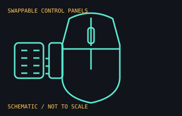

[ MICE AND TRACKBALLS // IDENTIFIED COMPONENT ]
Razer Naga V2 Pro
Modular wireless MMO mouse announced in 2022 with interchangeable magnetic side plates and a configurable scroll wheel.

MODEL IDENTIFICATION: RZ01-0440 family. This is the 2022 Naga V2 Pro, not the Naga V2 HyperSpeed or later Naga V3 Pro. Confirm exact region suffix and side-plate set before identifying a unit.
Recorded specifications
| Side plates / controls | Three interchangeable plates with 2-, 6-, or 12-button layouts; 19 programmable buttons and up to 22 programmable controls, per the launch release. |
|---|---|
| Sensor / wheel | Razer Focus Pro 30K optical sensor; HyperScroll Pro wheel with six configurable modes. |
| Switches | Razer Optical Mouse Switches Gen-3. |
| Connection | HyperSpeed Wireless 2.4 GHz, Bluetooth Low Energy, or USB-C wired connection. |
| Battery estimate | Up to 150 hours on HyperSpeed Wireless or 300 hours on Bluetooth, published without lighting; actual runtime varies with usage. |
Compatibility and handling
- The included USB receiver supports HyperSpeed wireless; Bluetooth and USB-C are alternate connection paths. Confirm the active mode before diagnosing lag or pairing.
- Razer Synapse 3 provides wheel configuration, remapping, and profiles; full customization depends on supported software and host OS.
- Keep all magnetic side plates, receiver, cable, and any separately purchased charging accessories with the record; the later Naga V3 Pro has different specifications.
- Do not count the alternate side plates as additional simultaneous controls; only one plate is installed at a time.
Manufacturer sources
- Razer Newsroom — Naga V2 Pro launch releaseManufacturer's dated 2022 source for the interchangeable plates, controls, sensor, wheel, and connection/battery claims.
- Razer — Naga V2 Pro product referenceThe product URL may redirect to a newer Naga model; use the dated launch release above for the historical V2 Pro specification.